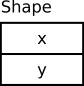
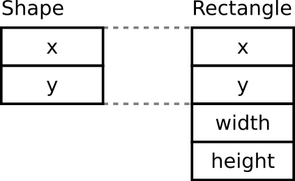

Objektumok memóriaképe
Czirkos Zoltán · 2020.02.08.
Objektumok memóriaképe. Adattag pointerek. Standard-layout objektumok.
Tudjuk, hogy egy struktúra (objektum) adattagjait a fordító egymás után helyezi el a memóriában. Sok szabályt vesz eközben figyelembe: az adattagok deklarációjának sorrendjét, azok típusát és méretét, a virtuális függvényeket, és a célhardver sajátosságait is. Ezekkel legtöbbször nem kell foglalkoznunk, hiszen az objektumaink adattagjait név szerint érjük el: az adattag hivatkozásakor a címszámítás, a struktúrán belüli hely (bájtokban mérve: ofszet) meghatározása automatikusan történik.
Néha azonban figyelembe kell ezt vennünk. Például ha egy objektum állapotát szeretnénk fájlba menteni (az objektumot bájtsorozattá alakítani, szerializálni, utána pedig ezt menteni, „perzisztálni”), nem mindig tehetjük meg, hogy a memóriaterületét egy az egyben, bájtról bájtra kiírjuk, visszaolvassuk. Néhány olyan körülmény, ami ezt megakadályozza:
- Az objektumok felépítése platformfüggő. Egy adott géptípuson, fordítóval, fordítóbeállítással létrehozott
program a saját bináris objektumait bár vissza tudhatja olvasni, de a fájlt hiába visszük át egy másik gépre,
amelyen más méretű az
int, más a bájtsorrendje. A fájlt ott közvetlenül beolvasni és a memóriába írni már nem lehet majd. - Az objektum nem csak nyers adat, hanem pointereket is tartalmazhat. A pointernek csak akkor van értelme, ha megvan a mutatott adat is. Tehát minden alkalommal, amikor pointert tartalmazó objektumot szeretnénk elmenteni, akkor el kell menteni az általa mutatott objektumokat is. (Vajon mi történik egy ciklikus, körbe-körbe láncolt listánál?) A pointerek, mint számértékek viszont csak addig érvényesek, amíg a mutatott objektumok azon a bizonyos helyen vannak a memóriában. A programot újraindítva, újabb dinamikus memóriakezelési kérés után máshol fogunk memóriát kapni az operációs rendszertől.
- Ha az objektumnak virtuális függvénye van, vagy virtuálisan örököl, akkor van függvénytábla pointere is. Ezt kiírhatjuk fájlba, de visszaolvasnunk már nem szabad. A függvénytábla címe fordítóként, verziónként, sőt programfuttatásonként változhat (ti. hova került be a program a memóriába). Egy objektum függvénytábla pointerét felülírva garantáltan tönkretesszük azt, és a következő függvényhívás szinte biztosan a program elszállásához vezet.
A C és a C++ nem támogatja a szerializációt: nem kapunk nyelvi támogatást annak megvalósítására. Lássuk ezért, hogyan tudjuk viszonylag kevéssé fájdalmasan, általánosan megvalósítani azt. Ebben az előadásban az alapokról lesz szó – az objektumok memóriabeli megjelenéséről –, a reflexió megvalósításának egy egyszerű módjával pedig egy külön írás foglalkozik.
Tekintsük az alábbi függvényt! Ez a paraméterként kapott objektum memóriaterületét írja ki bájtról bájtra.
#include <iostream>
#include <iomanip>
#include <cstdint>
template <typename T>
void print_obj_hex(T const & obj) {
uint8_t const *ptr = reinterpret_cast<uint8_t const *>(&obj);
for (size_t i = 0; i != sizeof(obj); ++i) {
std::cout << std::hex << std::setw(2) << std::setfill('0')
<< static_cast<unsigned int>(ptr[i]) << ' ';
}
std::cout << std::endl;
}Az első sorban a kapott objektumra mutató pointert, vagyis az &obj címet átalakítjuk uint8_t
típusra mutató pointerré. Így tudjuk majd bájtonként elérni az objektum memóriaterületét. Azért kellett a
reinterpret_cast operátort használnunk, mert a static_cast-tal és a dynamic_cast-tal
ellentétben ez bármely két pointertípus között megengedi a konverziót, akkor is, ha azok eredendően nem kompatibilisek. A kapott
ptr pointert 0-tól sizeof(obj)-1-ig indexelhetjük.
int i = 0x11223344;
print_obj_hex(i);44 33 22 11
Az std::hex manipulátor hexadecimális módot állít be. Az std::setw(2) két karakter
szélesre állítja a kiírást, az std::setfill('0') pedig azt mondja meg, hogy 0 karakterekkel kell
kitölteni az üres helyett. Az unsigned int-té való alakításra azért volt szükség, mert különben nem számok, hanem
karakterek íródnának ki a képernyőre. std::cout<<'A' → A, std::cout<<(int)'A' → 65,
márpedig ptr[i] típusa karakter (az uint8_t csak egy unsigned char), tehát az előbbi
függvényváltozat aktiválódna. Visszasírhatjuk a printf()-et.
Hozzunk létre egy egyszerű osztályt, amiben egész típusú adattagok vannak! Legyen ez mondjuk egy Shape, alakzat
osztály, amiből mindjárt származtatni is fogunk egy téglalapot. Nézzük meg, hogyan néz ki a hozzá tartozó memóriaterület!
struct Shape {
Shape(int x, int y) : x(x), y(y) {}
int x, y;
};
int main() {
Shape b(0x1122, 0x3344);
print_obj_hex(b);
b.x = 0xFFFFFFFF;
print_obj_hex(b);
}22 11 00 00 44 33 00 00 ff ff ff ff 44 33 00 00
Az objektum két int típusú tagváltozót tartalmaz. Ezek itt négy bájtosak, ezért az objektum összesen 8 bájtot
foglal a memóriából. Az inicializáló értékek alapján ki tudjuk azt is következtetni, hogy a memóriaterület elején az
x tag, utána pedig az y tag található.
Az objektumhoz egy bájttal több memóriaterület sem tartozik. A C/C++ nyelv ebben annyira hatékony, amennyire csak lehet. Ezt a hatékonyságot azért kapjuk cserébe, hogy a nyelv futási időben már nem követi, hogy mit csinálunk. Az objektumok mellett nem tárol metaadatokat („housekeeping information”), ami alapján futási időben pl. egy objektum típusát lekérdezhetnénk, vagy ami alapján dinamikusan foglalt objektumokat automatikusan felszabadíthatnánk (szemétgyűjtés, garbage collection). Csak a nyers adat.
Mi történik, amikor egy objektum adattagjait használjuk? A tömbökkel kapcsolatban a C-s tanulmányok során hamar megtanuljuk a
címszámítás menetét (minden tömbindexelés egy címszámításból és egy dereferálásból áll). Ilyen címszámítás az objektumok
adattagjainak elérésekor is történik. Amikor azt írjuk, b.x, akkor a fordító olyan gépi utasításokat generál,
amelyek:
- Veszik a
bobjektum memóriacímét. - Hozzáadnak annyi bájtot, amennyire a
bobjektum elejétől kezdve az adattag található. Ez az ún. eltolás vagy ofszet (offset). - Ezután írják vagy olvassák az adattagot, a kifejezéstől függően.
Az x adattag esetén az ofszet 0, az y-nál pedig 4 bájt. Az ofszeteket a
fordító a struktúrát felépítő típusok tulajdonságai és azok sorrendje alapján határozza meg.
Az objektumok igazítása a memóriában (alignment)
Az adattagok elhelyezkedéséről két dolog állítható biztosan: 1) az adattagok a
memóriában deklarációjuk sorrendjében lesznek, 2) „ahogy a processzor szereti”. Gyakori például,
hogy gyorsabb a műveletvégzés akkor, ha a 4 bájtos int változók a
memóriában néggyel osztható címeken kezdődnek (alignment). Ezért az alábbi
objektumba a fordító 2×3 darab kitöltő (padding) bájtot tesz:
struct S {
int x;
char c;
int y;
char d;
};
S b2 = {0x1122, 'c', 0x3344, 'd'};
print_obj_hex(b2);22 11 00 00 63 7f 00 00 44 33 00 00 64 00 00 00
A színes bájtok mutatják a karaktereket és a kitöltő bájtokat.
Az első karakter után a fordító itt azért hagyott ki helyet, hogy az y
adattag néggyel osztható címen kezdődhessen. A második karakter után pedig azért, hogy ha
S típusú objektumból tömböt hozunk létre, akkor a következő tömbelem x-e
is néggyel osztható helyre kerüljön. Így történhet meg az, hogy az adattagok
egyszerű átrendezésével egy kisebb objektumhoz juthatunk!
struct S {
int x;
int y;
char c;
char d;
};
S b3 = {0x1122, 0x3344, 'c', 'd'};
print_obj_hex(b3);22 11 00 00 44 33 00 00 63 64 00 00
A kitöltő bájtok értéke memóriaszemét, és a programból nem tudjuk elérni őket,
csak a print_obj_hex() függvényéhez hasonló mágiával.
Származtassunk most egy Rectangle, téglalap osztályt a
Shape osztályból! Legyen ennek újabb két egész szám adattagja, szélesség és magasság:
struct Rectangle : Shape {
Rectangle(int x, int y, int width, int height)
: Shape(x, y), width(width), height(height) {
}
int width, height;
};
Rectangle d1(0x1122, 0x3344, 0x5566, 0x7788);
print_obj_hex(d1);22 11 00 00 44 33 00 00 66 55 00 00 88 77 00 00
A kiírt bájtok között az új objektum mind a négy adattagját felismerjük. Ami igazán érdekes és fontos ebben, az az, hogy egy
Rectangle objektum eleje úgy néz ki, mint egy Shape objektum:
Shape b1(0x1122, 0x3344);
Rectangle d1(0x1122, 0x3344, 0x5566, 0x7788);
print_obj_hex(b1);
print_obj_hex(d1);22 11 00 00 44 33 00 00 22 11 00 00 44 33 00 00 66 55 00 00 88 77 00 00
A fordító úgy oldja meg az öröklést, hogy a leszármazott objektumba, annak
elejére egy ugyanolyan memóriaképű objektumrészletet tesz, mint ahogyan az
ősosztály egy objektuma is kinéz. Ez kell ahhoz, hogy az ősosztály lefordított
tagfüggvényei működjenek a leszármazott objektumokon is. Mindegy, hogy
ősosztálybeli, vagy leszármazott objektumot kap a tagfüggvény, mindkét esetben
ugyanazokat az ofszeteket kell használnia. Például
akár a b1 objektumról, akár a d1 objektumról van szó,
az objektumok elejéhez képest 4 bájtnyira lesz az y
adattag.
Ennek azért is kell így lennie, mert az ősbeli tagfüggvények
nem tudják, hogy leszármazotton vagy ősön dolgoznak-e. Sőt a fordító az ősbeli
tagfüggvények lefordításának pillanatában általában nem is ismeri a leszármazottakat!
Mindez nem csak a tagfüggvényeknél van így, hanem minden egyes
objektumhivatkozásnál, minden egyes pointernél. Ha a d1 objektum
Rectangle* típusú memóriacímét Shape* típusúvá alakítjuk,
akkor igazából nem történik semmi, ugyanazt a címet kapjuk. Ez a cím
lenne a this pointer értéke is egy metódushívásnál.
std::cout << &d1 << std::endl;
std::cout << static_cast<Shape*>(&d1) << std::endl;0x7fff28a401c8 0x7fff28a401c8
Ez teszi lehetővé azt is, hogy öröklést valósítsunk meg C-ben, még ha a szintaxis nem is lesz túl szép.
Ha ki akarjuk írni egy objektum adattagjait, elég sablonos függvényt kell írnunk: minden egyes adattagon végig kell mennünk,
azoknak a << operátorait használva. Felmerül a kérdés: nem lenne egyszerűbb egy ciklusban végigmenni az
adattagokon? A helyzet az, hogy nem – ez korántsem ilyen egyszerű. A C++-ban az objektumok adattagjait nem tudjuk „indexelni”,
ahogyan egy tömb elemeit. Ezért nem tudunk rajtuk iterálni sem. Menjünk vissza ezért egy pillanatra a C-hez, és nézzük meg, hogyan
lehet felhasználni a probléma megoldására az adattagok ofszetjeinek ismeretét.
Az ofszetek használata
Tudjuk azt, hogy egyforma típusú objektumok memóriaképe is egyforma. Egy osztályon belül ezért az ofszetek fix értékek. Az egyik objektumon használt ofszet jó lesz a másik, ugyanolyan típusú objektumhoz is. Ha van egy objektumunk és egy ofszetünk, akkor egy kis pointermágiával el tudjuk érni az adattagot is.
Állítsuk elő az ofszetet! Ehhez nem kell más, minthogy fogunk egy objektumot, megnézzük egy adattagja memóriacímét; aztán ebből
a memóriacímből kivonjuk magának az objektumnak (az objektum „elejének”) a memóriacímét. Az adattag és az objektum pointere eltérő
típusú, ezeket nem vonhatjuk ki egymásból. Ezért közös típusúvá, char*-gá kell cast-olni őket. Már csak azért is, mert
sizeof(char) == 1, és a két memóriahely közötti távolságot bájtokban szeretnénk kapni:
de működni fog
struct Point {
double x, y;
};
Point p;
unsigned int x_offset = (char*)&p.x - (char*)&p;
unsigned int y_offset = (char*)&p.y - (char*)&p;Ez elvileg nem szabványos kód, de ettől most tekintsünk el.
Ugyanezt visszafelé is meg tudjuk tenni: ha van egy objektumunk, a címétől arrébb kell ugrani annyi bájtot, amennyi az ofszet, és megkapjuk az adattag címét. Ezt már csak az adattag típusára kell cast-olni és dereferálni, máris látjuk az adattagot. Kódban ez egyszerűbb, mint elmondva:
*(double*)((char*)&p + x_offset) = 12; /* p.x = 12; */
*(double*)((char*)&p + y_offset) = 38; /* p.y = 38; */A null pointer trükk
Ahhoz, hogy az ofszetet kiszámítsuk, nincs szükségünk konkrét, létező objektumra. Elég egy képzeletbeli objektum is. Hogy lesz a képzeletbeli objektumnak memóriacíme? Persze sehogy, de mivel képzeletbeli, lehet egy dereferált null pointerről is szó. Amíg nem csinálunk tényleges írási vagy olvasási műveletet a null pointer által hivatkozott memóriaterületre, addig ez nem gond.
de működni fog
Innen jön az ötlet: fogjunk egy Point* típusú null pointert, hivatkozzuk meg annak x vagy
y adattagját; de ne írjuk vagy olvassuk ezt az attribútumot, hanem képezzük a címét! Ebből kivonva a
képzeletbeli objektumunk címét (null pointer), megkapjuk a keresett ofszetet:
unsigned int x_offset = (char*) &((Point*)nullptr)->x - (char*) nullptr;
unsigned int y_offset = (char*) &((Point*)nullptr)->y - (char*) nullptr;Ezt a fura kódot nem is szokás leírni, igazából erre való a beépített offsetof makró
(#include <stddef.h>). Erre a célra a portabilitás miatt is inkább azt érdemes használni.
Ez sem szabványos, de működni szokott. Az offsetof viszont szabványos.
Iterálás az adattagokon
Mivel az ofszet egy egyszerű egész szám, adatként tudjuk kezelni. Az adattagokat neveikkel együtt (később az is kellhet valamire) betehetjük egy tömbbe, amely tömbön iterálva aztán az adattagokon is tudunk iterálni:
struct MemberData {
char const* name;
unsigned int offset;
};
MemberData point_member_data[] = {
{ "x", offsetof(Point, x) },
{ "y", offsetof(Point, y) },
{ nullptr },
};Point p = { 2.1, 3.4 };
for (size_t i = 0; point_member_data[i].name != nullptr; ++i) {
printf("p.%s = %g\n",
point_member_data[i].name,
* (double*) (((char*) &p) + point_member_data[i].offset));
}p.x = 2.1 p.y = 3.4
Ha többféle típusunk van a leírandó osztályban, akkor a MemberData struktúrába
fölvehetünk még egy enum-ot, amelyik leírja majd a típust:
struct Point {
double x, y;
char* label; // van egy sztring is (most C-ben)
};
enum MemberType {
TYPE_DOUBLE,
TYPE_STRING,
};
struct MemberData {
char const* name;
MemberType type; // az attribútum típusa
unsigned int offset;
};
MemberData point_member_data[] = {
{ "x", TYPE_DOUBLE, offsetof(Point, x) },
{ "y", TYPE_DOUBLE, offsetof(Point, y) },
{ "label", TYPE_STRING, offsetof(Point, label) },
{ nullptr },
};
int main() {
Point p = { 2.1, 3.4, "P1" };
for (size_t i = 0; point_member_data[i].name != nullptr; ++i) {
switch (point_member_data[i].type) { // hogy kell kezelni?
case TYPE_DOUBLE:
printf("p.%s = %g\n",
point_member_data[i].name,
* (double*) (((char*) &p) + point_member_data[i].offset));
break;
case TYPE_STRING:
printf("p.%s = \"%s\"\n",
point_member_data[i].name,
* (char**) (((char*) &p) + point_member_data[i].offset));
break;
}
}
}Vagy egy kicsit szebben, egy saját makróval, hogy a pointermágia ne legyen mindig a szemünk előtt:
#define memberof(VAR,OFFSET,TYPE) (* (TYPE*)(((char*) &VAR) + OFFSET))
case TYPE_DOUBLE:
printf("p.%s = %g\n",
point_member_data[i].name,
memberof(p, point_member_data[i].offset, double));Gondoljunk bele, milyen hasznos egy ilyen leírás a programunk karbantarthatósága szempontjából!
Példaként négyféle teendő a Point típushoz:
- Szeretnénk fájlba írni az attribútumait:
printf %g,%s. - Szeretnénk fájlból visszaolvasni az attribútumait:
scanf %g &xésya koordinátákhoz, továbbámallocésscanf %s sa sztringhez. - Szeretnénk létrehozni egy dialógusablakot, amelyben a felhasználó látja és szerkesztheti egy pont tulajdonságait: csúszkák a koordinátáknak, szövegbeviteli mező a névnek (és ezeket az elemeket létrehozó függvényhívások valamilyen grafikus keretrendszerben).
- Szeretnénk a dialógusablakból kiolvasni a felhasználó által megadott adatokat (szintén attribútumonként, attribútum típusonként különböző függvényhívással).
Ha így csináljuk, mindez automatikusan történhet. Ha módosítjuk a Point struktúrát,
már csak a hozzá tartozó leíró struktúrát kell hozzáigazítani, és a program összes többi helyén
érvényesül a változás!
Figyeljük meg, milyen absztrakciót adnak a MemberData struktúrában tárolt ofszetek!
- Egy „normál” pointer egy konkrét objektum egy konkrét adattagjára mutat, például az
&p1.xap1pontxadattagját hivatkozza. - Az ofszetnél az objektumot eldobjuk: az ofszet egy határozatlan objektum egy konkrét adattagját képes hivatkozni.
Mondhatjuk úgy is, hogy a Point osztálybeli objektumok x adattagjára
hivatkozik az adott ofszet. Ahhoz, hogy egy tényleges változót (adattagot) kapjunk, szükségünk van egy Point
objektumra is, de ez itt a lényeg: a dereferálásnál tudjuk megmondani azt is, hogy melyik Point objektumról
beszélünk.
C++-ban már a '98-as verzió óta van erre külön nyelvi elem. Az adattag mutatók (member pointer) pont ezt tudják: nem egy memóriában lévő objektumra, változóra mutatnak, hanem valamely osztálybeli objektumok adattagjaira. Így:
struct Point {
double x, y;
};
double Point::* mp; /* A Point osztály valamelyik double adattagja */
Point p1, p2;
mp = &Point::x; /* a pontok x koordinátája */
p1.*mp = 3.2; /* p1.x = 3.2; */
p2.*mp = 4.5; /* p2.x = 4.5; */
mp = &Point::y; /* a pontok y koordinátája */
p1.*mp = 6.7; /* p1.y = 6.7; */
p2.*mp = 7.8; /* p2.y = 7.8; */Az adattag mutató itt double Point::* típusú. Ehhez a mutatott változó típusa (itt: double) mellett hozzátartozik az osztály is (itt: Point),
amelynek az adattagjáról beszélünk. A működés hátterébe belegondolva ez logikus is: az adattag mutatót mindig csak olyan típusú
objektummal szabad használni, amilyen típus adattagjára hivatkozik. Vegyük észre, hogy a pointer értékadásoknál, azaz x
és y adattagok meghivatkozásánál nincs szó konkrét objektumról: a &Point::x kifejezésben a Point
osztálybeli objektumokról általánosságban beszélünk.
Az adattag mutatók között egyébként az öröklésnek megfelelő konverzió is automatikus. Az érdekesség
az, hogy az automatikus konverzió iránya fordított: a Base osztályból leszármazó Derived osztály
esetén egy T Base::* típusú mutató alakítható automatikusan T Derived::* típusra. Logikus is, hiszen
a leszármazottnak lesz biztosan olyan adattagja, mint amilyen az ősnek volt, nem pedig az ősnek volt biztosan olyanja, mint
amilyenje a leszármazottnak is van.
Ha az objektumra magára is (szokványos) pointer mutat, akkor a .* operátor helyett a ->* operátort
kell használni:
double Point::* mp;
Point p1;
Point *pp1 = &p1;
mp = &Point::x;
pp1->*mp = 3.2; /* pp1->x = 3.2 */Ezzel a nyelvi elemmel C++-ban sokkal szebben meg tudjuk csinálni az osztály adattagjait leíró tömböt:
#include <iostream>
struct Point {
double x, y;
};
struct PointMemberData {
char const* name;
double Point::* mptr;
};
PointMemberData point_members[] = {
{ "x", &Point::x },
{ "y", &Point::y },
{ nullptr },
};
int main() {
Point p1 = { 2.3, 4.5 };
for (size_t i = 0; point_members[i].name; ++i) {
std::cout << point_members[i].name
<< " = "
<< p1.*(point_members[i].mptr) << std::endl;
}
}Figyeljük meg a szintaxist! Az adattag pointer maga is struktúrák tömbjéből kerül elő, a point_members[i].mptr
kifejezés révén. Ennek a zárójelezett kifejezésnek az értéke az adattag pointer, amely a .* operátor jobb oldali
operandusa. A bal oldali operandus p1, a vizsgált pont. A zárójelre szükség van, mert nem balról jobbra haladunk a
kiértékelésben.
Ha meg akarjuk oldani azt is, hogy az adattagok eltérő típusúak lehessenek, akkor ezekhez az adattag mutatókhoz még egy type erasure-t is kell használnunk: reflexió C++-ban.
Láttuk, hogy a C++ objektumainkban egy bájtnyi extra adat nem tárolódik, ha nincsen virtuális függvényük. Éppen ezért, ha egy ilyen objektum memóriaterületét látjuk, nem tudjuk megmondani, milyen típusú objektumról van szó. Nem így akkor, ha van virtuális függvénye. Mivel minden osztály virtuális függvénytáblája egyedi, az objektumban tárolt, virtuális függvénytáblára mutató pointer vizsgálatával meg tudjuk mondani, milyen típusú objektumról van szó. Ezt az adattagot nem látjuk, de különféle operátorokkal tudunk némi információt kinyerni belőle.
Mik ezek a lehetőségek? Tekintsük át őket az alábbi osztályhierarchián!
class A {
public:
virtual ~A() {}
};
class B : public A {
};
class C : public A {
};A függvényhívás operátora: virtuális függvény
Hozzáadunk egy virtuális függvényt, amellyel a típus lekérdezhető. Általában a lekérdezés helyett az elvégzendő tevékenységet szoktuk a függvénybe írni, de ez nem mindig célravezető.
class A {
public:
virtual std::string get_type() const = 0;
virtual ~A() {}
};
class B : public A{
virtual std::string get_type() const { return "B"; }
};
class C : public A{
virtual std::string get_type() const { return "C"; }
};
int main() {
A* ptr = new C();
if (ptr->get_type() == "B")
std::cout << "Obj is B" << std::endl;
if (ptr->get_type() == "C")
std::cout << "Obj is C" << std::endl;
}Cast operátor: dynamic_cast
A dynamic_cast operátor null pointert ad akkor, ha helytelen típusúvá szeretnénk castolni egy pointert (vagy
referencia esetén kivételt dob). Az ellenőrzés futási időben történik.
A* ptr = new B();
if (B* bptr = dynamic_cast<B*>(ptr))
std::cout << "Obj is B" << std::endl;
if (C* cptr = dynamic_cast<C*>(ptr))
std::cout << "Obj is C" << std::endl;RTTI – typeid operátor
A typeid operátor egy std::type_info (#include <typeinfo>)
típusú objektumot ad vissza egy változóról. Ezzel is megvizsgálhatjuk egy objektum dinamikus típusát:
A* ptr = new B();
if (typeid(*ptr) == typeid(B))
std::cout << "Obj is B" << std::endl;
if (typeid(*ptr) == typeid(C))
std::cout << "Obj is C" << std::endl;Nem csak adattagra, hanem metódusokra mutató pointerek is léteznek. Ezek típusához hozzátartozik a tagfüggvény fejléce (paraméterek és visszatérési érték), és az osztály is. A meghívásuknál figyelni kell a zárójelezésre, mert a függvényhívás operátor precedenciája magasabb, mint az indirekció operátoráé:
class Button {
public:
void click(int x, int y);
void doubleclick(int x, int y);
};
void (Button::*event_fptr)(int, int);
Button b1;
event_fptr = &Button::click;
(b1.*event_fptr)(3, 5); /* b1.click(3, 5); */
event_fptr = &Button::doubleclick;
(b1.*event_fptr)(3, 5); /* b1.doubleclick(3, 5); */Az adattagokra és metódusokra mutató pointerek szintaktikája nehézkesnek tűnik elsőre, de ugyanúgy működnek, mint a szokványos
pointerek. Ugyanoda kell rakni a * operátort és a precedenciát módosító zárójelet, mint azoknál, csak a csillag
elé kerül az Osztály:: vagy az objektum. jelölés:
void ( *global_func_ptr)(int, int);
void (MyClass::*member_func_ptr)(int, int);
( *global_func_ptr)(1, 2);
(my_obj.*member_func_ptr)(1, 2);Bár a szintaxis maga módján logikus, de a használat, elég nehézkes. Ezért vezették be C++17-ben az std::invoke()
függvényt: std::invoke(mfptr, objektum, további paraméterek) formát használva olvashatóbb a programkód.